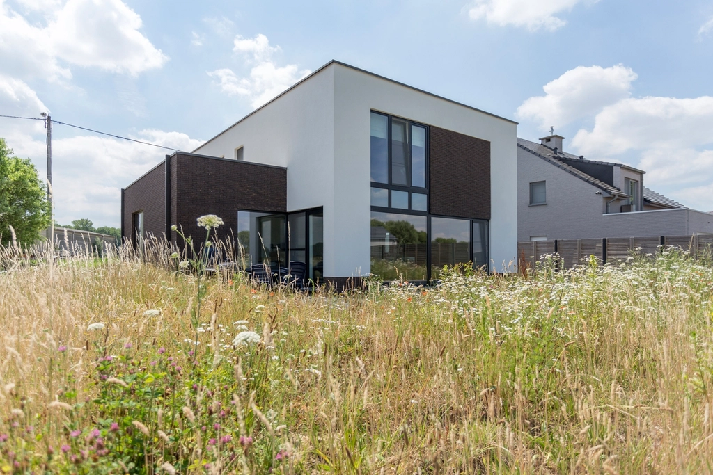

01 / Thiết kế ý tưởng
Nhà Cỏ May, ven đô Thủ Đức
Hai khối đặc và rỗng đặt lệch nhau: khối gạch sẫm giữ phần riêng tư, khối trắng mở kính lớn ra vườn hoang để ánh sáng chiều đi sâu vào sinh hoạt chung.
- Loại công trình
- Nhà ở gia đình
- Địa điểm
- TP. Thủ Đức, TP.HCM
- Năm
- 2024
- Quy mô
- 320 m² sàn
- Vai trò
- Thiết kế ý tưởng, diễn họa
- Vật liệu chính
- Gạch nung, vữa trắng, kính
Bối cảnh
Lô đất ven đô giáp cánh đồng cỏ, gia đình ba thế hệ cần không gian chung rộng nhưng vẫn giữ góc riêng cho từng người.
Thách thức
Hướng nắng tây chiếu thẳng mặt mở chính; cần lấy cảnh đồng mà không làm nóng nhà vào buổi chiều.
Phát triển ý tưởng
Tách nhà thành hai khối, đặt khối đặc làm tấm chắn nắng tây, khối rỗng quay góc để đón sáng phản xạ từ mặt cỏ.
Chiến lược vật liệu
Gạch nung sẫm tích nhiệt và già đi đẹp theo thời gian; vữa trắng phản sáng vào trong; khung kính mảnh màu than.
Kết quả thiết kế
Mục tiêu: sinh hoạt chung sáng đều cả ngày, giảm kính hướng tây, mọi phòng ngủ có tầm nhìn ra vườn. Diện tích kính hướng tây giảm còn 18%, phòng khách không cần bật đèn trước 17:30.